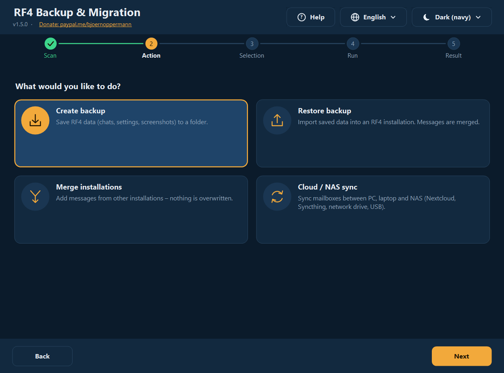
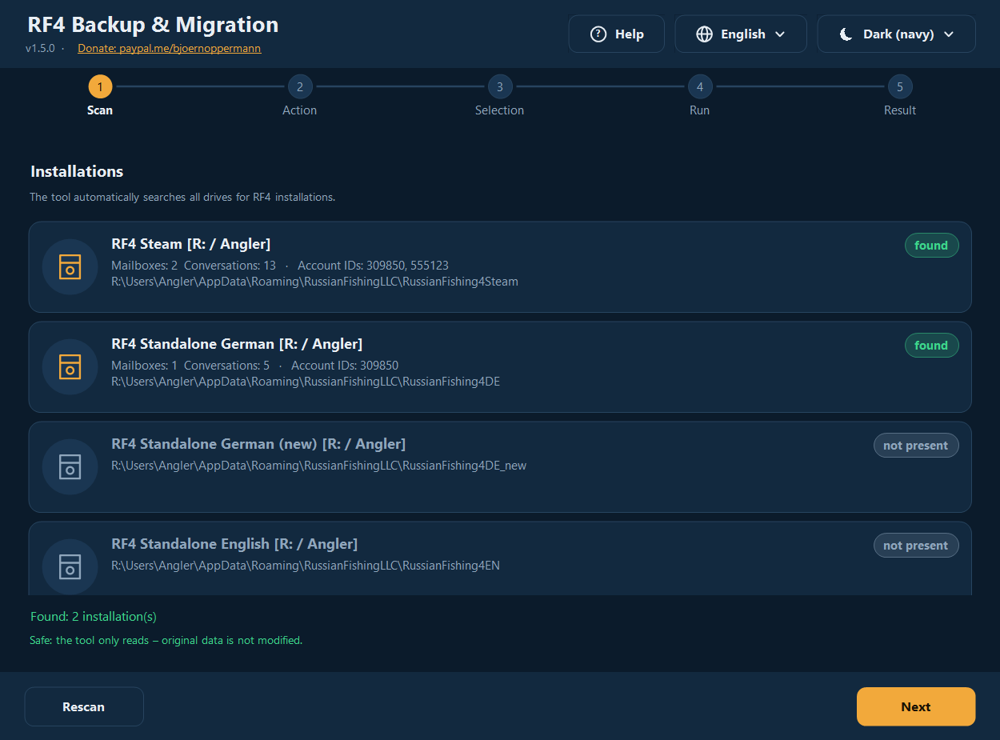
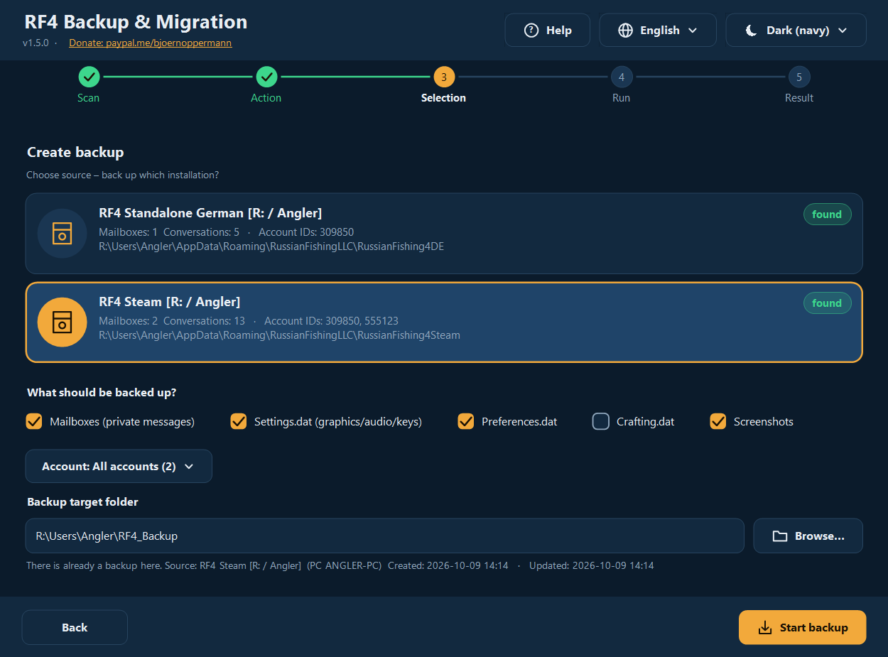
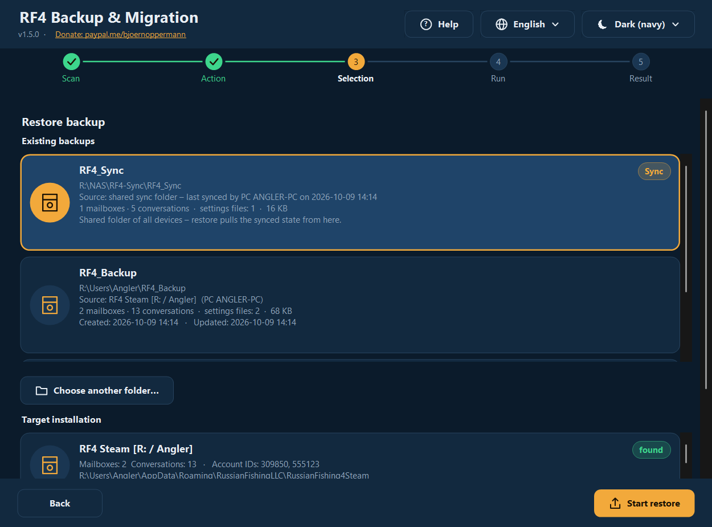
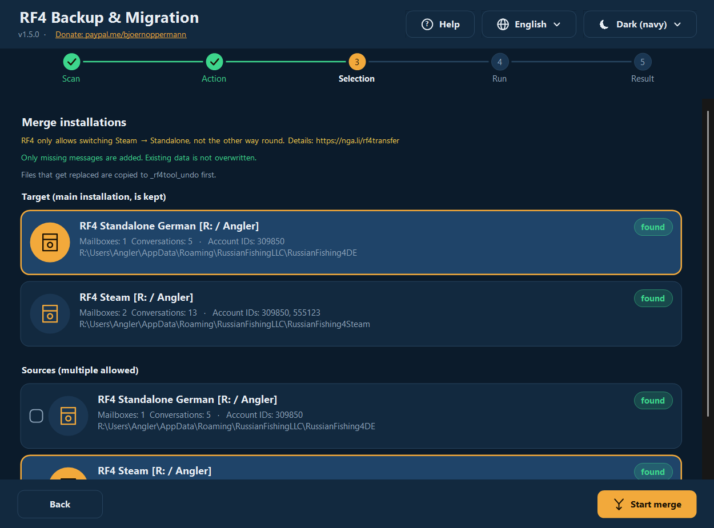
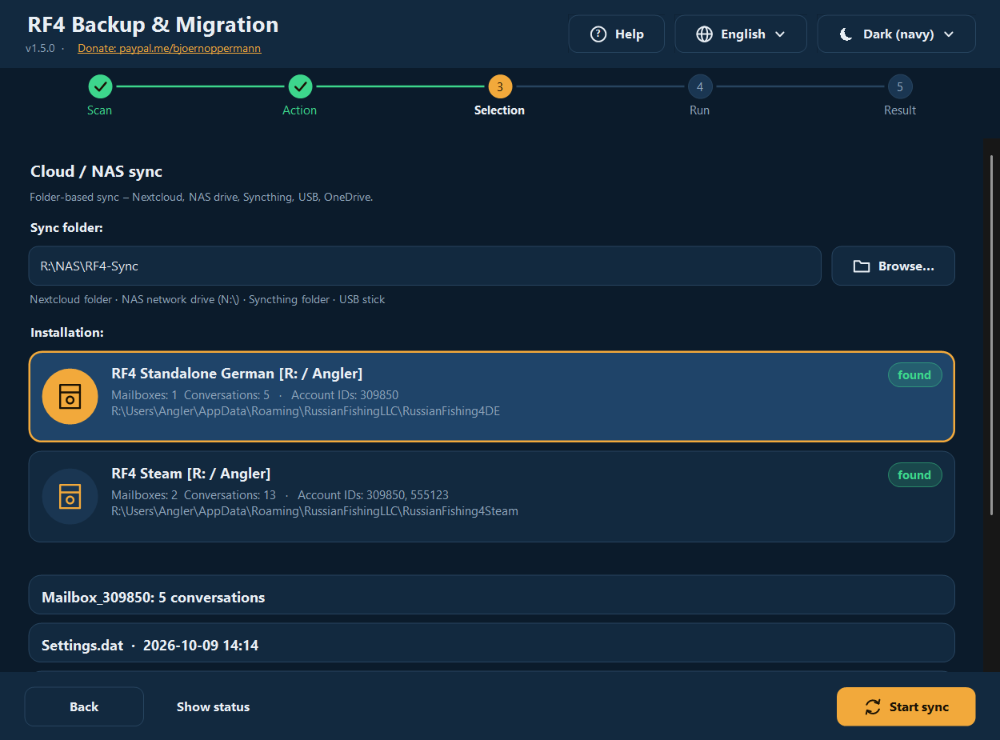
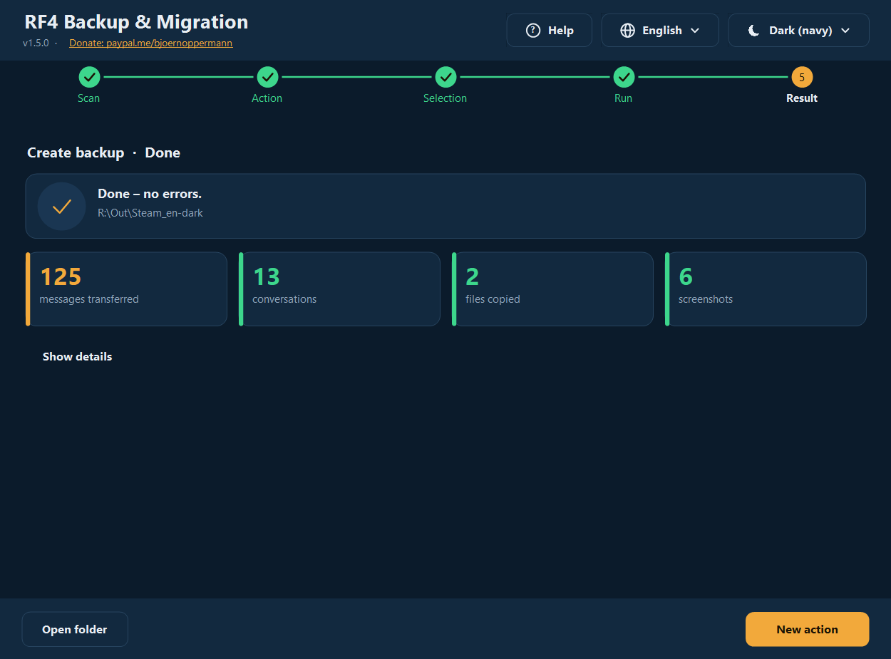
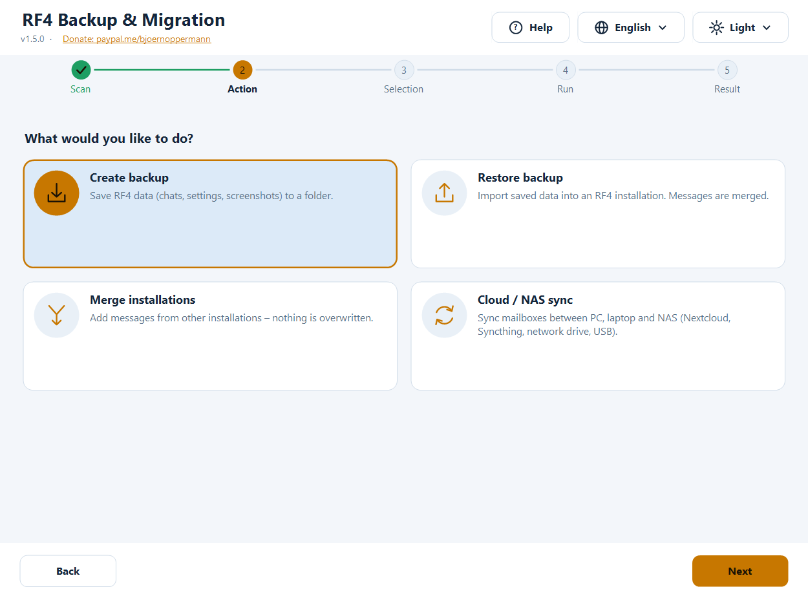
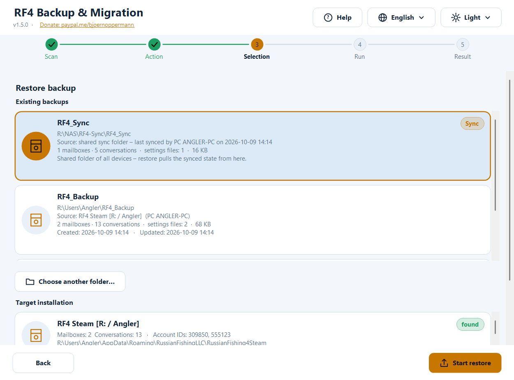
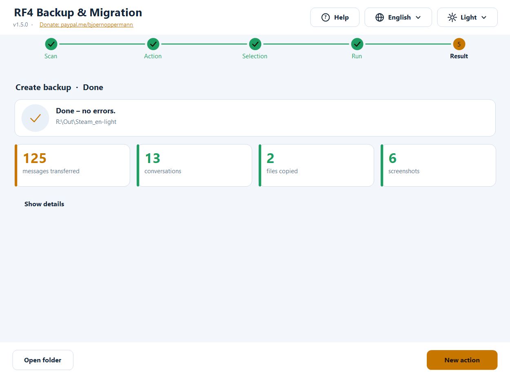

RF4 — Backup & Migration Tool
Deutsch · English · 中文 · Русский
Free tool to back up, restore, merge and synchronize your Russian Fishing 4 player data: in-game mailboxes (chats), settings and screenshots. For Windows (graphical interface + terminal, PowerShell) and Linux/macOS (bash).
- 🌍 Four languages, fully switchable: German · English · 中文 · Русский — more languages can be added as a plain text file
- 🎨 Dark and light, automatic (follows Windows, or choose manually) — more themes can be added as a text file
- 🖥️ Crisp at any display scaling (100 % … 200 %, multiple monitors)
- 🛡️ Nothing is ever deleted. Files that get replaced are first copied to an undo folder
- 🔍 Finds Standalone, Steam, Wine, Proton, other users and other drives automatically
- 📍 Every backup knows which installation it came from and when; restoring also works from the sync folder / NAS
- ❓ A help button opens this guide (with screenshots) in the language of the program

📄 Guide & blog: nga.li/rf4b · 📥 Download: nga.li/rf4dl · 💻 Source: nga.li/rf4git
Contents
- Quick start
- Installation
- The graphical interface
- The terminal program
- Features in detail
- Languages and themes (add your own)
- Where is my data?
- Safety & verification
- FAQ & troubleshooting
- Uninstall
- Settings, environment variables
- Development, tests, build
- Changelog
Quick start
Moving to a new PC or reinstalling in three steps:
- Old PC: start the program → Create backup → choose the source → Start backup.
- Take the backup folder (default:
Users\<name>\RF4_Backup) to the new PC via USB stick, NAS or cloud. Start RF4 there once and close it. - New PC: start the program → Restore backup → pick your backup from the list → choose the target installation → Start restore.
Progress, inventory and tackle live on the RF4 servers and are available on the new PC automatically. This tool takes care of what is stored locally: chats, settings, screenshots.
Installation
| Option | For whom | How |
|---|---|---|
Installer (rf4sa-backup-full-setup-v1.5.0.exe) | Windows, recommended | Double-click, next, done. Creates Start-menu entries (GUI, terminal, guide with screenshots, uninstall) plus a page with clickable links (donate, blog, download, source). No admin rights needed. |
rf4sa-backup-gui-setup-v1.5.0.exe / rf4sa-backup-cli-setup-v1.5.0.exe | GUI only / terminal only | same as above |
| No installer | Windows | Right-click rf4sa-backup-gui-v1.5.0.ps1 → Run with PowerShell |
| Linux / macOS | bash | bash rf4sa-backup-v1.5.0.sh (needs bash ≥ 4 and python3) |
All program files carry the version in their name (rf4sa-backup-gui-v1.5.0.ps1, rf4sa-backup-v1.5.0.ps1, rf4sa-backup-v1.5.0.sh), just like the installers. On update the installer replaces the older files. Windows requirements: Windows PowerShell 5.1 (preinstalled on Windows 10/11; Windows 7 with WMF 5.1). Python is not needed on Windows.
Note “script execution disabled”: When started with a right-click, Windows sets the execution policy automatically for that one start. If a message appears anyway: powershell -ExecutionPolicy Bypass -File rf4sa-backup-gui-v1.5.0.ps1
The graphical interface
A step-by-step guide with five stations at the top: Scan → Action → Selection → Run → Result. Top right you always find Help (❓), Language (🌐) and Theme (☀/☾). The interface switches instantly, no restart. The help button opens this guide offline in your browser — in the language currently set in the program, with matching screenshots.
1. Scan
The program searches for all RF4 installations: your own user, other users, all drives. Found ones are marked, possible (not yet existing) targets are greyed out. The list scrolls (mouse wheel, also directly over an entry).

2. Action
Four cards: Create backup · Restore backup · Merge installations · Cloud/NAS sync.
3. Selection
Create backup: choose the source, tick what to save (mailboxes, Settings.dat, Preferences.dat, Crafting.dat, screenshots), optionally only one account if there are several, pick the target folder. If a backup already lives there, a hint shows its source and date.

Restore backup: at the top you see all existing backups with contents, size, source (which installation, which PC) and date (created/updated) — newest first. Listed are the default folder, previously used folders, their subfolders and the sync folder (marked Sync). Choose another folder… takes a backup from elsewhere (USB stick, network drive/NAS); you may also pick the parent of the sync folder (the program finds RF4_Sync inside by itself). Then choose the target installation; everything the backup contains is ticked automatically.

Merge: choose the target (main installation) and tick one or more sources. Only missing messages are added.

Cloud/NAS sync: enter the sync folder (Nextcloud, Syncthing, NAS drive, USB …), choose the installation, Start sync. Show status lists what is already in the sync folder.

4./5. Run and result
While working, a progress bar shows the current line. Afterwards you see key figures (messages transferred, conversations, files copied, screenshots, skipped, errors). Show details expands the full log; Open folder opens the target in Explorer.

Light and dark
Theme: Automatic (like Windows) is the default — switch Windows between light and dark mode and the program follows immediately (even while running). You can pick a fixed theme.



Language: on first start according to the Windows language, otherwise English; your choice is saved. Keyboard: Tab moves between cards/buttons, Space/Enter selects. High-resolution monitors: the program is DPI-aware (per-monitor v2) — text and icons are drawn natively, not scaled up. Moving the window to another monitor adapts everything.
The terminal program
powershell -ExecutionPolicy Bypass -File rf4sa-backup-v1.5.0.ps1 # language automatic
powershell -ExecutionPolicy Bypass -File rf4sa-backup-v1.5.0.ps1 -Lang zh # fixed: de | en | zh | ru | custom
╔════════════════════════════════════════════════════════════╗
║ RF4 Backup & Migration v1.5.0 ║
║ RF4: nga.li/rf4de · Blog: nga.li/rf4b ║
║ Donate: paypal.me/bjoernoppermann ║
╚════════════════════════════════════════════════════════════╝
[1] Scan – Show all installations
[2] Backup – Save data to a folder
[3] Restore – Import from a backup
[4] Merge – Combine installations
[5] Sync – Synchronize with cloud/NAS
[H] Help / guide
[L] Change language (English)
[0] Exit
- Menus: type a number. Multi-select: toggle numbers (
1 3 4or1,3),a= all,n= none,Enter= continue,0= back. - **
[H]** opens the guide (HTML with screenshots) in the current program language. - Restore offers existing backups as a list (with path, source, contents, date; the sync folder is marked
[Sync]) or manual path entry — UNC paths such as\\NAS\rf4\RF4_Syncwork too. - After every action a summary with key figures follows.
- Box drawing and symbols are Unicode and stay aligned even with 中文 (double width is taken into account).
RF4_ASCII=1gives plain ASCII (for old consoles/logs). - For 中文 use Windows Terminal (the classic console may show boxes depending on the font).
Linux / macOS:
bash rf4sa-backup-v1.5.0.sh # language automatic (LANG), or:
bash rf4sa-backup-v1.5.0.sh -l ru
Detected: Windows partitions (/mnt/*, /run/media/*/*), Wine prefixes (~/.wine, ~/.local/share/wineprefixes/*, Lutris), Steam Proton (…/steamapps/compatdata/*, also Flatpak). Same menus as on Windows ([H] opens the guide via xdg-open/open).
Features in detail
What gets backed up?
| Item | Contents |
|---|---|
| Mailboxes | in-game chats (Mailbox_<AccountID>\*.dat, JSON). Stored locally, not on the RF4 servers. |
| Settings.dat | graphics, audio, key bindings |
| Preferences.dat | further game settings |
| Crafting.dat | crafting data |
| Screenshots | Documents\Russian Fishing 4\Screenshots (also subfolders; existing names are never overwritten) |
Backup
Copies the chosen items into the target folder. Mailboxes are merged, not blindly overwritten — a backup into an existing folder is therefore an incremental backup. If settings files differ, the program asks first. In the backup folder the program creates the file rf4-backup.info: source (installation, variant, PC name, user), created, updated and a short history of the latest backups. In the restore list (GUI, terminal, bash) you can later see where a backup came from and how recent it is. The file is plain text and readable on every platform.
Restore
Imports a backup into an installation (also into an empty, new one). Messages are merged, settings files are only replaced after confirmation. The program warns if RF4 is still running (only the game process rf4_x64/rf4_x32 counts — an open launcher or installer does not trigger a warning). Please close the game first, otherwise it overwrites your changes when it exits.
Restoring from the sync folder / NAS / network drive:
- The configured sync folder appears in the backup list automatically (marked Sync, source: “last synced by PC … on …”) — just click it.
- Or use Choose another folder… and navigate there: the sync folder, its parent folder or a backup folder. The program recognizes
RF4_Syncinside the chosen folder by itself. - The network drive must be connected. Tip: drive letters only exist in the Windows session in which they were connected — with “Run as administrator” or in other sessions better use the UNC path (
\\NAS\share\…). - If the program finds nothing there it says so clearly (“no backup found, not in a RF4_Sync subfolder either”) instead of failing silently.
Merge
Adds all messages missing in the target installation:
- Every message has a unique ID (
meta.id). Messages are deduplicated by ID — nothing appears twice. - New messages are inserted by time (
meta.created). - A file is only written if there really are new messages. It is written via a temp file that replaces the original only after a successful read-back check (JSON readable again).
- The original is copied to the undo folder first.
Typical cases: Steam → Standalone, Steam → Steam (new PC), Standalone → Standalone, several old installations → one new one.
RF4 officially only allows switching Steam → Standalone, not the other way round. Details: nga.li/rf4transfer
Cloud / NAS sync
Bidirectional through a shared folder (subfolder RF4_Sync):
- Local → sync: new messages are merged into the sync folder.
- Sync → local: new messages from the sync folder (from other devices) are merged locally.
- Settings files: the newer file (timestamp) wins; if identical nothing happens.
Use the same folder on every device. Works with Nextcloud, Syncthing, OneDrive, network drives (also OpenMediaVault/OMV shares), USB sticks. RF4_Sync\.sync_log records which device synced last and when.
The undo folder
For restore, merge and sync every file that gets replaced is copied first to:
<installation>\_rf4tool_undo\<date_time>\<folder>\<file>
To undo a change copy the file back from there. The folder does not bother RF4; you can delete it yourself at any time. The program never deletes it.
Languages and themes
Everything is modular: languages and themes are plain text files. The four languages and two themes are built in; more are picked up automatically at start — no recompiling.
Add your own language
- Copy the template [
examples/template.lang](examples/template.lang) to
%APPDATA%\rf4-backup\lang\pt.lang (or into a lang\ folder next to the script; Linux: ~/.config/rf4-backup/lang/pt.lang).
- Set
@code=ptand@name=Portuguêsat the top, translate the text right of the=. Missing lines fall back to English automatically — so partial translations work. - Restart the program: the language appears in the language menu (and is even chosen automatically if it matches the Windows language).
Placeholders {0}, {1} must stay in the text (they are replaced by names/numbers). File encoding: UTF-8. The guide (help button) exists in the four built-in languages; for a custom language the English version opens.
@code=pt
@name=Português
app_title=RF4 Cópia e Migração
menu_backup=Cópia – guardar dados
Add your own theme
Copy the template [examples/template.theme](examples/template.theme) to %APPDATA%\rf4-backup\themes\<name>.theme and adjust the colours (#RRGGBB). @base=dark|light says which Windows mode it stands in for under “Automatic”. Unset colours come from the dark theme. It appears in the theme menu.
Built in
| Theme | Description |
|---|---|
| Dark (navy) | deep navy blue, warm amber accent |
| Light | light blue-grey, darker amber (contrast verified) |
Contrast ratios (text/background ≥ 7:1, buttons ≥ 4.5:1) are checked by the tests.
Where is my data?
%APPDATA%\RussianFishingLLC\<variant>\Mailbox_<AccountID>\*.dat chats (JSON, UTF-8 with BOM)
%APPDATA%\RussianFishingLLC\<variant>\Settings.dat | Preferences.dat | Crafting.dat
Documents\Russian Fishing 4\Screenshots
| Folder name | Meaning |
|---|---|
RussianFishing4DE | RF4 Standalone German |
RussianFishing4DE_new | RF4 Standalone German (new) |
RussianFishing4EN | RF4 Standalone English |
RussianFishing4Steam | RF4 Steam |
| (any other folder there) | detected automatically |
On Linux the same path lies inside the respective Wine/Proton prefix (…/drive_c/users/<name>/AppData/Roaming/RussianFishingLLC/…).
The tool itself stores (settings only, no game data): %APPDATA%\rf4-backup\settings.json (language, theme, sync folder, recently used backup folders) or ~/.config/rf4-backup/settings.conf; on unexpected errors additionally error.log in the same folder.
Safety & verification
- Nothing is ever deleted — neither game data nor backups nor the undo folder.
- Scan and backup only read from the installation.
- Writing actions (restore/merge/sync) copy replaced files to the undo folder first; message files are written atomically with a read-back check and only on real changes.
- Before restore/merge/sync the program checks whether RF4 is running (warning).
- Unexpected errors do not crash the program: it shows a message and writes details to
%APPDATA%\rf4-backup\error.log. - No network access (except what you yourself specify as sync/backup folder), no telemetry. The source code is fully readable (the shipped
.ps1/.shfiles are the code).
Checksums: see CHECKSUMS.txt.
Get-FileHash .\rf4sa-backup-gui-v1.5.0.ps1 -Algorithm SHA256 # Windows
sha256sum rf4sa-backup-v1.5.0.sh # Linux
Compare the hash with CHECKSUMS.txt (or the value on nga.li/rf4dl) before the first start.
FAQ & troubleshooting
“No installation found” RF4 must have been started at least once (it creates its data folder then). Check that %APPDATA%\RussianFishingLLC exists. Installations on other drives are found if a Users folder lies there; otherwise choose the target path manually in Restore.
My backup is not in the list The list shows the default folder RF4_Backup, previously used folders, the sync folder and one level below each. A folder counts as a backup if it contains Mailbox_* folders, one of the .dat files or a Screenshots folder. Use Choose another folder… for other places.
Restore from NAS / sync folder does not work Check that the drive is connected and reachable (Explorer). When started “as administrator” the program does not see the network drives of the normal session — use the UNC path. Either choose the sync folder itself, its parent folder or the entry marked Sync from the list. If the message “no backup found” remains, the folder does not (yet) contain Mailbox_* data: run Sync from one device first.
No chats after restore RF4 must have been closed while you imported. Import again (safe to repeat) or copy back from the undo folder. Also check the account ID: chats live under your account’s ID (Mailbox_<ID>).
The “RF4 is running” warning appears although only the launcher is open That should not happen any more: only rf4_x64/rf4_x32 count. If it still appears the game is still running in the background (Task Manager).
The list does not show all entries It scrolls: mouse wheel (also directly over an entry) or the scrollbar on the right. The window can be enlarged.
“Script cannot be run” powershell -ExecutionPolicy Bypass -File <file>; for downloaded files possibly right-click → Properties → Unblock.
中文 / Русский shows boxes in the terminal Use Windows Terminal or a font with CJK/Cyrillic. The GUI is not affected.
The GUI is too big for my screen The start size follows the screen; the window can be resized and the content scrolls when space is short.
Steam Cloud overwrites files? Possible with Steam installs when Steam Cloud is active for RF4. After a restore start Steam offline or pause cloud sync for the game.
**Linux: python3 missing** sudo apt install python3 (Debian/Ubuntu). Python is only needed to merge the JSON files.
Uninstall
- Installer variant: Start menu → RF4 Backup Tool → Uninstall RF4 Backup Tool (or Windows Settings → Apps). The uninstaller only removes the program files and asks whether to delete the saved settings too (language, theme, sync folder, your own language/theme files). Your RF4 game data and your backups are never touched.
- Without installer: just delete the files. Optionally the folder
%APPDATA%\rf4-backup(Linux:~/.config/rf4-backup).
Settings, environment variables
| Variable | Effect |
|---|---|
RF4_LANG=xx | set the language (de, en, zh, ru or custom) |
RF4_ASCII=1 | terminal: plain ASCII output |
RF4_BACKUP_DIRS=a;b (Linux: a:b) | additional folders searched for backups |
RF4_SCAN_USERS=a;b (Linux: a:b) | additional “Users” folders searched for installations |
RF4_NO_DRIVE_SCAN=1 | do not search all drives |
RF4_THEME_BASE=dark|light | force the Windows mode used for “Automatic” (tests) |
RF4_GUI_SCALE=1.5 | force the GUI scaling (tests/screenshots) |
RF4_FAKE_RUNNING=rf4_x64 | simulate a running game (tests) |
Development, tests, build
The source code lives in src/:
| File | Contents |
|---|---|
core.ps1 | shared logic (scan, merge, backup/restore, sync, finding backups, backup info, statistics, configuration, loading languages/themes, opening help) |
lang/*.lang | all texts (one file per language) |
themes/*.theme | colours (one file per theme) |
ui.cs | self-drawn GUI building blocks (buttons, cards, progress, stepper …), DPI-aware |
gui.ps1, cli.ps1 | interfaces |
cli.sh | Linux/macOS script |
build.ps1 assembles the shipped single files with the version in the name (languages, themes and C# code are embedded; the bash language table is generated from the .lang files — one source for all platforms) plus the guide as HTML (docs/guide.<language>.html, generated from the four READMEs, with screenshots).
powershell -ExecutionPolicy Bypass -File build.ps1
powershell -ExecutionPolicy Bypass -File tests\Test-Core.ps1 [-RealDataDir <mailbox folder>] # logic, languages/themes, contrast, merge, sync, backup info
powershell -ExecutionPolicy Bypass -File tests\Test-Cli.ps1 # terminal: all languages, box width, flows
powershell -STA -ExecutionPolicy Bypass -File tests\Test-Gui.ps1 # GUI: panels × theme × language × scale, overflow, dialogs, mouse wheel
powershell -STA -ExecutionPolicy Bypass -File tests\Test-RealFlow.ps1 # all functions with real dialogs on fake installations in the real profile
bash tests/test-sh.sh # Linux script
powershell -STA -ExecutionPolicy Bypass -File tools\make-screenshots.ps1 # screenshots for the guide (per language, demo data)
Test safely with realistic data: tools\fake-installs.ps1 -Create creates the fake installations RussianFishing4TEST_A/_B/_C from a real installation (overlapping conversations, second account, differing settings); -Remove deletes only those with the marker file. The originals are never modified.
New text: add the key to all src/lang/*.lang (tests check that every key exists in every built-in language and that placeholders match; tools\add-lang-keys.ps1 helps), then build.ps1. Changes to the guide: carry them over to all four READMEs (same sections/images), then build.ps1 and tools\make-screenshots.ps1. Installer: installer/*.iss with Inno Setup 6 (ISCC.exe installer\rf4sa-backup-full.iss).
Changelog
1.5.0
- New interface: completely redrawn, crisp at any DPI, dark/light automatically following Windows, help/language/theme menus in the header, cards instead of lists, stepper, progress bar, result with key figures. The log window at the bottom is gone (details can be expanded).
- Existing backups are listed in Restore (GUI, terminal, bash) with source and date (
rf4-backup.info); used folders are remembered. Restore from the sync folder/NAS works from the list or via the (parent) folder. - Help in the program language: the help button (GUI),
[H](terminal/bash) and the Start menu open the guide as HTML with screenshots matching the language; all four language versions have the same content. - Modular: languages as
lang/*.lang, themes asthemes/*.theme— your own files are picked up automatically. - Files with the version in the name (
rf4sa-backup-gui-v1.5.0.ps1…); the installer replaces older files. - Installer: Start-menu entries including guide and uninstall, clickable links, prompt about saved settings when uninstalling.
- Fixes: the message dialog (e.g. “RF4 is running”) crashed with a .NET error and aborted restore/merge/sync; an open launcher wrongly triggered the warning; the mouse wheel did not scroll lists; the parent of the sync folder was not recognized in restore.
- Terminal and bash: box drawing/symbols (CJK-width aware), coloured summary, ASCII fallback.
- More than 380 automated checks (logic, terminal, GUI, real-data run with real dialogs, Linux) including contrast checks of the themes.
1.4.0 shared core, complete translation (DE/EN/ZH/RU), fixes (own installation was never found, crashes with single files, screenshot restore), undo folder, warning when RF4 is running. 1.3.0 i18n (menus only), Inno Setup installers · 1.2.0 cloud/NAS sync · 1.1.x account IDs, multi-source merge · 1.0.0 first release
Links & licence
| RF4 official (DE / EN) | nga.li/rf4de · nga.li/rf4en |
| RF4 on Steam | nga.li/rf4steam |
| Steam → Standalone transfer | nga.li/rf4transfer |
| Forum | nga.li/rf4forum |
| Article & guide | nga.li/rf4b |
| Source code (Codeberg) | codeberg.org/Natural78/rf4-backup-tool |
MIT License — free to use, modify and share. If you like the tool: paypal.me/bjoernoppermann ☕